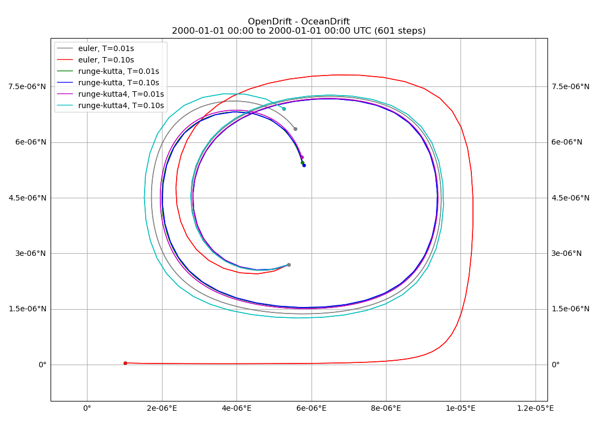

Note
Click here to download the full example code
Double gyre, advection¶
Illustrating the difference between Euler and Runge-Kutta propagation schemes, using an idealised (analytical) eddy current field.
Double gyre current field from https://shaddenlab.berkeley.edu/uploads/LCS-tutorial/examples.html
Out:
euler, T=0.01s
euler, T=0.10s
runge-kutta, T=0.01s
runge-kutta, T=0.10s
runge-kutta4, T=0.01s
runge-kutta4, T=0.10s
(<cartopy.mpl.geoaxes.GeoAxesSubplot object at 0x7fcf68b06580>, <module 'matplotlib.pyplot' from '/opt/conda/envs/opendrift/lib/python3.8/site-packages/matplotlib/pyplot.py'>)
import numpy as np
from datetime import datetime, timedelta
from opendrift.readers import reader_double_gyre
from opendrift.models.oceandrift import OceanDrift
double_gyre = reader_double_gyre.Reader(epsilon=.25, omega=0.628, A=0.25)
duration=timedelta(seconds=6)
x = [.6]
y = [.3]
lon, lat = double_gyre.xy2lonlat(x, y)
runs = []
leg = []
i = 0
for scheme in ['euler', 'runge-kutta', 'runge-kutta4']:
for time_step in [0.01, 0.1]:
leg.append(scheme + ', T=%.2fs' % time_step)
print(leg[-1])
o = OceanDrift(loglevel=50)
o.fallback_values['land_binary_mask'] = 0
o.set_config('drift:scheme', scheme)
o.add_reader(double_gyre)
o.seed_elements(lon, lat, time=double_gyre.initial_time)
o.run(duration=duration, time_step=time_step)
runs.append(o)
i = i + 1
runs[0].plot(compare=runs[1:], legend=leg, buffer=0.000001)
Total running time of the script: ( 0 minutes 13.263 seconds)